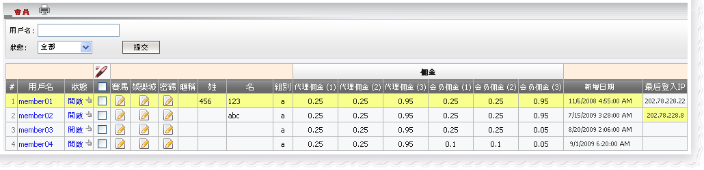
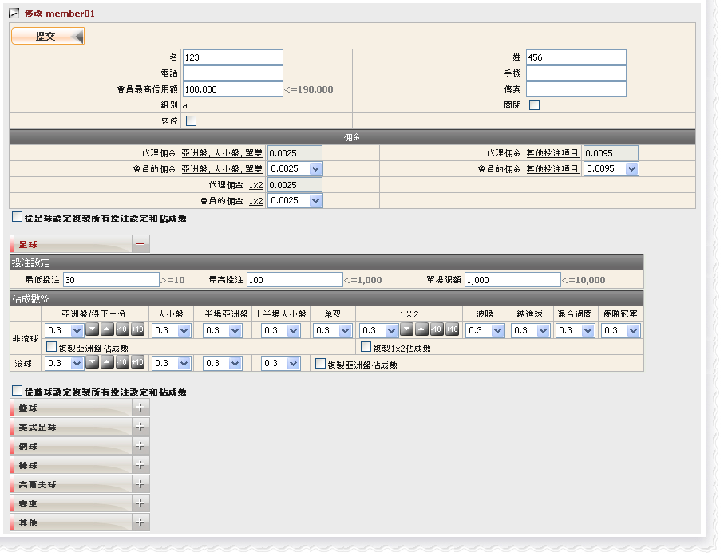
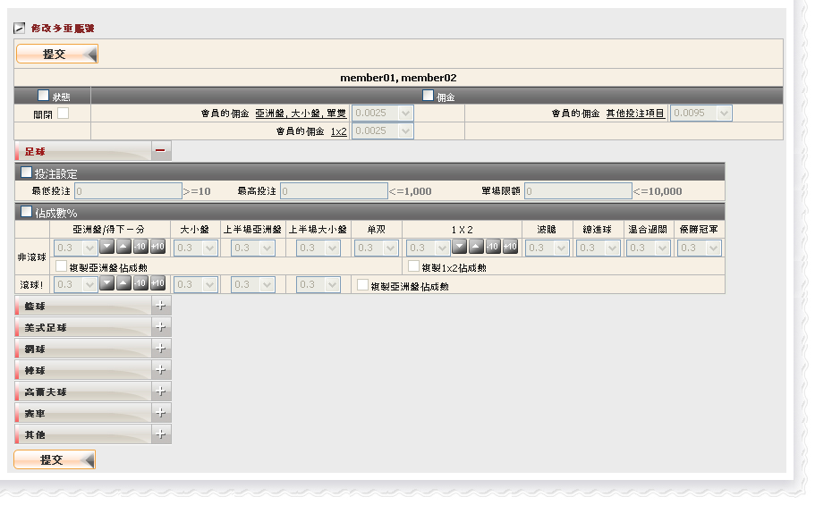
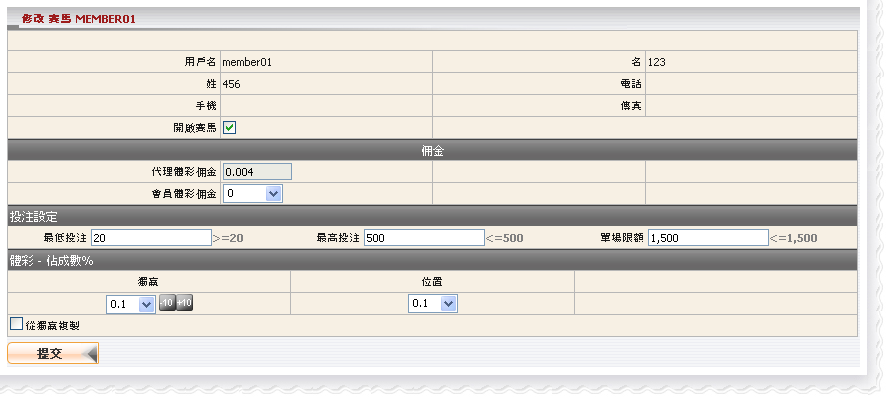
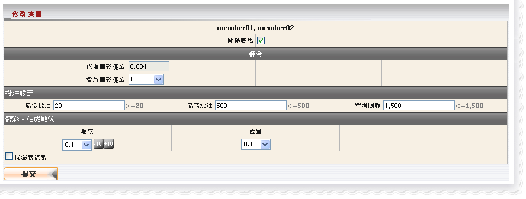
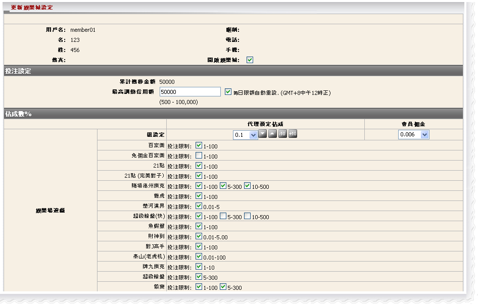
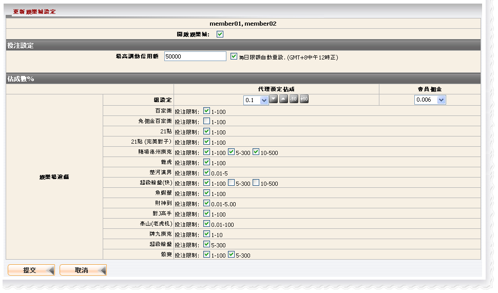
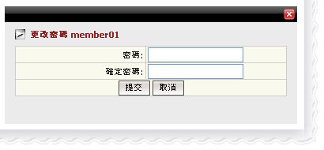
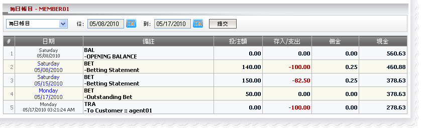

會員
定義:
這是一個屬於代理的會員名單; 當然, 代理通過會員名單能夠更新他/她的會員或者查看會員的每日賬目

會員
用詞註解:
狀態: 會員狀態 (開啟, 關閉或暫停)。組別: 會員屬於哪一個組別, 不同的組別擁有不同的佣金率
- 代理佣金(1): 代理折扣適用於投注類別: 亞洲盤,大小盤和單雙投注
- 代理佣金(2): 代理折扣適用於所有1x2類型的投注
- 代理佣金(3): 代理折扣適用於所有種類的其他投注項目
- 會員佣金(1): 會員折扣適用於投注類別: 亞洲盤,大小盤和單雙投注
- 會員佣金(2): 會員折扣適用於所有1x2類型的投注
- 會員佣金(3): 會員折扣適用於適用於所有種類的其他投注項目
如何修改會員資料?
- 我們可以修改單一會員或多重會員的以下資料: 狀態, 傭金, 投注設定及占成數
- 在體育博彩投注設定及占成, 我們可以設置個別運動類別的值或只是設置足球/籃球的值再應用到其他運動類別
編輯體育博彩
修改單一會員資料
- 點擊狀態欄的 "開啟" 鍵以修改會員信息, 之後將開啟編輯頁面, 請參考新增會員指引以便了解這頁面的細節

編輯單一會員
修改多重會員資料
- 在 "編輯圖標" 選取個別會員以修改多重會員資料, 然後將開啟多重會員修改頁面, 請參考新增會員指引以便了解這頁面的細節。請記得所有會員都具有相同的設置
若要編輯所有會員, 使用 "選擇所有" 功能

編輯多重會員
編輯賽馬
修改單一會員賽馬設定
- 在賽馬欄目點擊 "編輯圖標" 以修改會員資料, 會員修改頁面將被開啟, 請參考新增會員指引以便了解這頁面的細節

編輯單一會員
修改多重會員賽馬設定
- 選擇所有, 點擊 "編輯圖標", 然後選擇 "修改多重賽馬占成" 執行更新, 請參考新增會員指引以便了解這頁面的細節。請記得所有會員都具有相同的設置

編輯多重會員
編輯娛樂城
修改單一會員娛樂城設定
- 在娛樂城欄目點擊 "編輯圖標" 以修改會員資料, 會員修改頁面將被開啟, 請參考新增會員指引以便了解這頁面的細節

編輯單一會員
修改多重會員娛樂城設定
- 選擇所有, 點擊 "編輯圖標", 然後選擇 "修改多重娛樂城佔成" 執行更新, 請參考新增會員指引以便了解這頁面的細節。請記得所有會員都具有相同的設置

編輯多重會員
如何更改密碼?
在 "密碼" 欄目點擊編輯圖標以更改密碼

更改密碼
如何查看會員每日賬目?
點擊會員用戶名, 則將開啟會員每日賬目頁面

每日賬目
- 用詞註解:
- BAL-OPENING BALANCE: 包括所有轉賬數額的總餘額
- BET-Betting statement: 已結算注單的輸贏數額
- BET-Outstanding Bet: 仍在進行中/等待中註單的總投注額
- TRA-To Customer: 已被進行轉賬的數額